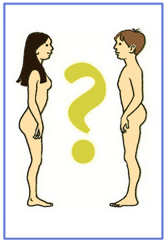

El aparato reproductor masculino es el encargado de la reproducción masculina.
El hombre produce los espermatozoides que son los encargados de trasmitir al nuevo ser la información genética aportada por el padre.
El aparato reproductor masculino está formado por los órganos genitales internos (testículos, conductos deferentes, vesículas seminales, uretra y próstata)
y los órganos genitales externos (pene y escroto).
Los testículos son dos órganos situados en una bolsa de piel llamada escroto. Producen los espermatozoides, que son las células
reproductoras masculinas, y la testosterona (es el andrógeno que produce el testículo), hormona que regula la aparición y el desarrollo de los caracteres
sexuales masculinos.
Los conductos deferentes son unos tubos que conducen los espermatozoides desde los testículos hasta la uretra.
Epidídimo , es un tubo muy fino y enrollado que se sitúa sobre cada testículo. Su función es recibir los espermatozoides desde los túbulos seminíferos del testículo y mantenerlos allí hasta su maduración.
Las vesículas seminales y la próstata fabrican un líquido que sirve de alimento y facilita el movimiento de los espermatozoides. Estos líquidos se mezclan con los espermatozoides y forman el semen.
La uretra es un conducto que se prolonga desde la vejiga urinaria, recorre el pene y se comunica con el exterior. Su función es conducir los espermatozoides al exterior.
- El pene es el órgano por el que los espermatozoides salen al exterior. En el interior del pene está la uretra (conducto para la salida del semen y para la orina). Su función es introducir los espermatozoides en el aparato reproductor femenino.
- El escroto es una bolsa de tejido que aloja los testículos.

¿Cuál es su función principal?
La función principal del sistema reproductor femenino es la producción de ovocitos, es decir, células sexuales femeninas.
También actúa como glándula endocrina, produciendo estrógenos y progesterona. Además, en su interior ocurre la fecundación y desarrollo del embrión y del feto hasta que se produce el parto.
¿Cómo está formado?
El aparato reproductor femenino está formado por los órganos genitales internos (ovarios, trompas de Falopio, útero y vagina) y los órganos genitales externos o vulva (labios mayores, labios menores y clítoris).
Los ovarios son dos glándulas sexuales que albergan a los óvulos y producen hormonas sexuales femeninas (estrógenos y progesterona).
Se localizan uno a cada lado del útero en la parte superior de la cavidad pélvica. De forma almendrada, miden aproximadamente 3,5 por 1,5 centímetros.
Están sujetos mediante ligamentos al útero y la pared pélvica y junto a las fimbrias de las trompas de falopio. Cada ovario produce un óvulo en cada ciclo ovárico de manera alternativa.
Las trompas de Falopio son unos conductos de unos diez a catorce centímetros de longitud, que comunican los ovarios con el útero. Son las encargadas de recoger los óvulos que vienen desde los ovarios y llevarlos al útero.
Las trompas tienen tres partes:
1- El istmo, que es la parte más estrecha, por la que se unen al útero.
2- La ampolla, que es la parte más ancha y larga
3- El infundíbulo o pabellón, que es el extremo, similar a un
embudo que termina en unas proyecciones en forma de dedos o tentáculos llamadas fimbrias.
El útero o matriz es una cavidad que aloja los óvulos y donde se desarrolla el bebé durante el embarazo. Mide de siete a ocho centímetros de longitud y tres de ancho.
Presenta tres capas:
1- la interna es el endometrio
2- la intermedia está formada por músculo liso
3- la externa está formada por un tejido más elástico.
- La vagina es un canal que comunica el útero con el exterior. Mide alrededor de diez centímetros de longitud. Se encuentra debajo y atrás de la vejiga, y delante y encima del recto.
La vagina es el lugar donde se aloja el pene durante las relaciones sexuales. Además, es el conducto por donde sale la regla y el bebé en el momento del parto.
La entrada de la vagina se encuentra parcialmente bloqueada por una membrana llamada himen, que por lo general se rompe cuando la mujer inicia su vida sexual.
La vulva está formada por unos repliegues de la piel llamados labios mayores y labios menores, y los orificios de la vagina y de la uretra.
En el punto de unión de los labios mayores y menores hay un pequeño órgano llamado clítoris.